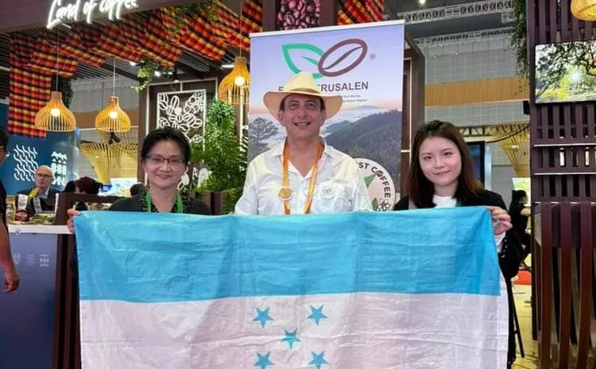

Comercialización
Cómo vendemos
La comercialización es el puente entre nuestras familias productoras y el mundo. Vendemos cafés especiales con trazabilidad digital, cumplimiento ambiental y calidad consistente. Los productores reciben mejores precios y los compradores, cafés confiables, sostenibles y de origen claro.
Destinos
Estados Unidos
Gran aceptación por su calidad y sabor.
Europa
Exportamos a varios países europeos, en especial a la República Checa y Francia.
Asia
Presencia creciente, con Japón y Corea del Sur como principales mercados.
Lo más relevante
Rainforest Alliance
APROCAJER obtiene la certificación de Rainforest Alliance para 150 productores.
Contenedor a Francia
Sale un contenedor con más de 450 QQ de café de Trinidad, Santa Bárbara, hacia Francia.
Inspección de la UE
La Unión Europea inspecciona las instalaciones para evaluar las prácticas de sostenibilidad.
Eventos internacionales y reconocimientos
Premios y reconocimientos
- SCA 2024: mejor café.
- China 2023: mejor café de feria.
- Corea del Sur: 6.º lugar mundial.
Pendiente: confirmar el nombre exacto y la categoría de cada premio.
Ferias y festivales
Nueva York, Praga, Rímini, Copenhague, Seúl, Pekín y Valencia.

Un aliado para su portafolio
Para los importadores, APROCAJER es un aliado confiable: cafés diferenciados, con una historia auténtica y un propósito que los consumidores reconocen.